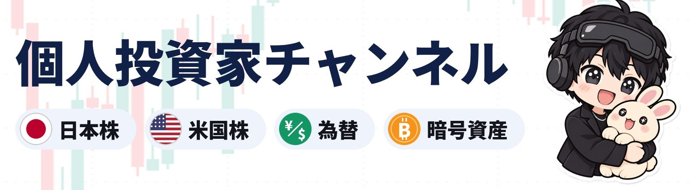
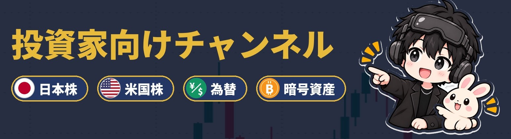
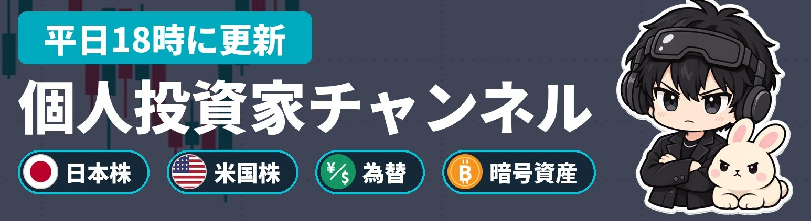
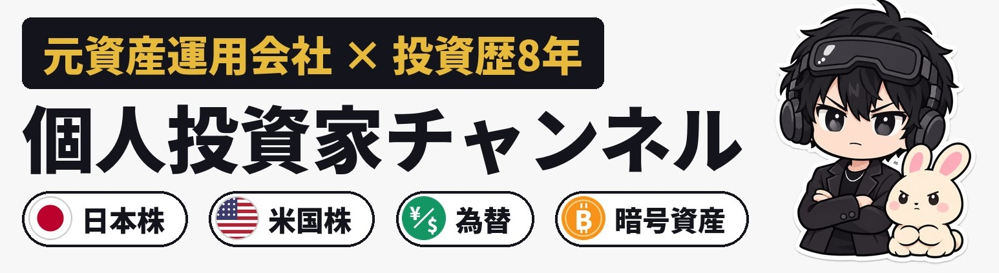
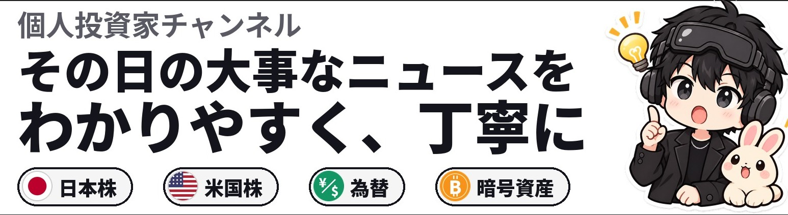
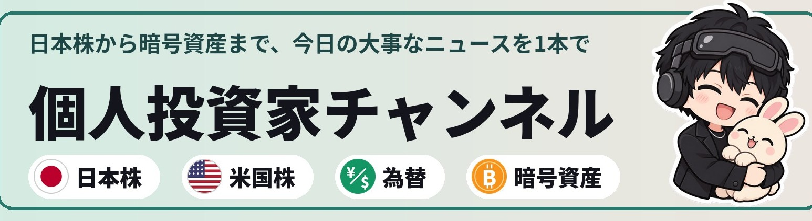
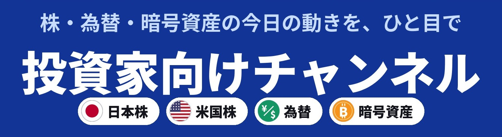
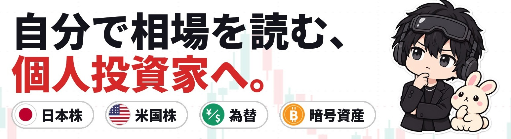
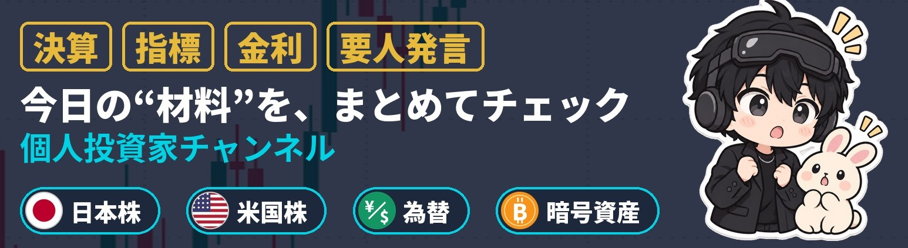
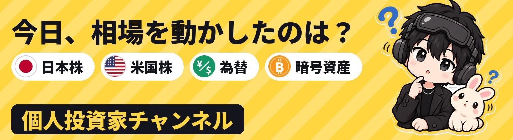

11/19 の打ち合わせのご意見（「投資家向け／個人投資家チャンネル」を太字で大きく、下に日本株・米国株・為替・暗号資産をイラスト付きで／「事実だけ」は出さない／説明は D07 をもとに経歴を入れ、やわらかく、絵文字可、最後の注意書きと3つのリンクはそのまま）を全案の土台にし、根拠の違う型を10通り作りました。
経歴の言葉は、Colneさんの X のプロフィール（「株・為替・暗号資産を中心に、マクロや企業の動きも交えながら呟きます｜元資産運用会社所属｜投資歴8年」・11/19 確認）に合わせています。
確かさについて：参考にしたチャンネルの登録者数は 11/19 に YouTube で確かめた数です。「最近の伸び」は数字で確かめられていません。Dラボの知見は広告・見出しなど別の場面の研究で、バナーで同じ効果が出るとは限りません。2〜3案に絞り、期間を分けて登録率を比べるのが確実です。
発注者のご意見

スマホでも見える範囲（実際の大きさに近い見え方）
バナーの実画像（2560×1440） ／ 見える範囲の確認 ／ スマホでの見え方
ねらい：白地×紺。「個人投資家チャンネル」を一番大きく、その下に日本株・米国株・為替・暗号資産をイラスト付きで
参考にしたもの：11/19 打ち合わせ 13:38〜13:47 の Colneさんのご意見をそのまま形にした案
📈 Colne（コルン）は、株・為替・暗号資産を中心に、マクロや企業の動きも交えながら投資を続けている投資家です。元資産運用会社所属、投資歴8年。 このチャンネルでは、日本株・米国株から為替・暗号資産まで、その日の大事なニュースを取り上げ、個人投資家のみなさんに向けて、わかりやすく丁寧に解説しています。 🇯🇵 日本株 🇺🇸 米国株 💱 為替 🪙 暗号資産 ▼毎日の相場分析と、週1回の来週の展望は note で https://note.com/colne ▼いま Colne が気にしている相場は X で https://x.com/colne_x ▼Colne ってどんな人？ https://www.colne.jp/ ※動画は事実をお伝えするもので、特定の銘柄の売り買いをすすめるものではありません。
発注者のご意見

スマホでも見える範囲（実際の大きさに近い見え方）
バナーの実画像（2560×1440） ／ 見える範囲の確認 ／ スマホでの見え方
ねらい：紺×金。P01と同じ形で言葉だけ「投資家向けチャンネル」。2つを並べて登録率を比べられる
参考にしたもの：同上。13:38 に Colneさんが最初に挙げた言葉「投資家向けチャンネル」
Colne（コルン）の、投資家向けチャンネルです📊 株・為替・暗号資産を中心に、マクロや企業の動きも交えながら投資を続けています（元資産運用会社所属・投資歴8年）。 日本株・米国株・為替・暗号資産の、その日の重要なニュースを取りこぼさないように、わかりやすく丁寧にまとめてお届けします。 ▼毎日の相場分析と、週1回の来週の展望は note で https://note.com/colne ▼いま Colne が気にしている相場は X で https://x.com/colne_x ▼Colne ってどんな人？ https://www.colne.jp/ ※動画は事実をお伝えするもので、特定の銘柄の売り買いをすすめるものではありません。
いま伸びている投資チャンネル

スマホでも見える範囲（実際の大きさに近い見え方）
バナーの実画像（2560×1440） ／ 見える範囲の確認 ／ スマホでの見え方
ねらい：暗いチャート地。更新の時刻を札にして先頭に置き、見に来る時間を決めてもらう
参考にしたもの：「朝7:00超速報 米国株&日本株 戸松信博 Market Update」（登録者5.08万人）のバナー「超速報！毎朝7時／5分でわかる米国株＆日本株市況」と説明欄「【毎朝7:00配信】…投資家の朝のルーティンとして」
https://www.youtube.com/@tomatsu7
【平日18時に更新】🕕 日本株・米国株・為替・暗号資産の、その日の大事なニュースをまとめて解説する、個人投資家チャンネルです。 仕事終わりに、今日の動きと今夜の予定をこの1本で。 話しているのは、元資産運用会社所属・投資歴8年の Colne（コルン）です。 ▼毎日の相場分析と、週1回の来週の展望は note で https://note.com/colne ▼いま Colne が気にしている相場は X で https://x.com/colne_x ▼Colne ってどんな人？ https://www.colne.jp/ ※動画は事実をお伝えするもので、特定の銘柄の売り買いをすすめるものではありません。
いま伸びている投資チャンネル＋Dラボ（信頼性）

スマホでも見える範囲（実際の大きさに近い見え方）
バナーの実画像（2560×1440） ／ 見える範囲の確認 ／ スマホでの見え方
ねらい：白黒。「元資産運用会社×投資歴8年」の札を一番上に。Dラボ：手軽さや得だけを言うと怪しまれるので、信頼性の材料を足す
参考にしたもの：「げんたろうの投資ch【元機関投資家】」（登録者21.8万人）はチャンネル名に経歴を入れている。バナーも「個別株で自由をつかめ」の一言だけの白黒
https://www.youtube.com/@AC_Investor ／ https://daigovideolab.jp/play/1556122743
元資産運用会社所属、投資歴8年。 Colne（コルン）が、日本株・米国株・為替・暗号資産のその日の大事なニュースを、個人投資家のみなさん向けに解説しています。 ふだんは株・為替・暗号資産を中心に、マクロや企業の動きも交えながら投資を続けています。 プロの目線で押さえておきたいニュースを、わかりやすく丁寧にお届けします✍️ ▼毎日の相場分析と、週1回の来週の展望は note で https://note.com/colne ▼いま Colne が気にしている相場は X で https://x.com/colne_x ▼Colne ってどんな人？ https://www.colne.jp/ ※動画は事実をお伝えするもので、特定の銘柄の売り買いをすすめるものではありません。
いま伸びている投資チャンネル＋発注者のご意見

スマホでも見える範囲（実際の大きさに近い見え方）
バナーの実画像（2560×1440） ／ 見える範囲の確認 ／ スマホでの見え方
ねらい：白い札に黒の太字で約束しすぎない一文。顔（キャラ）を右に。チャンネル名は小さく上に
参考にしたもの：「後藤達也・経済チャンネル」（登録者32.2万人）のバナー「投資情報を偏りなく わかりやすく」（白地に黒の太字＋本人の写真）。言葉は 13:44 の Colneさん「本日のニュースをわかりやすく丁寧に解説」
https://www.youtube.com/@gototatsuya
その日の大事なニュースを、わかりやすく、丁寧に。😊 日本株・米国株・為替・暗号資産まで、個人投資家のみなさんが押さえておきたいニュースを取り上げて解説しています。 投資になじみのない方にも伝わる言葉で話すようにしています。 Colne（コルン）：元資産運用会社所属・投資歴8年。株・為替・暗号資産を中心に、マクロや企業の動きも交えながら投資を続けています。 ▼毎日の相場分析と、週1回の来週の展望は note で https://note.com/colne ▼いま Colne が気にしている相場は X で https://x.com/colne_x ▼Colne ってどんな人？ https://www.colne.jp/ ※動画は事実をお伝えするもので、特定の銘柄の売り買いをすすめるものではありません。
いま伸びている投資チャンネル＋Dラボ（手軽さ）

スマホでも見える範囲（実際の大きさに近い見え方）
バナーの実画像（2560×1440） ／ 見える範囲の確認 ／ スマホでの見え方
ねらい：ミント色。13:46 の「もう少しだけ崩した感じで優しめに」に合わせた案。Dラボ：手軽さ（1本で）は信頼性と組み合わせる
参考にしたもの：「毎日チャート分析ちゃんねる」（登録者16.7万人）のバナー：上に一言「毎朝7時に世界の最新ニュースをお届け」、下に大きく「日本一早いチャート分析」、右に似顔絵。ミント色のやわらかい地
https://www.youtube.com/@kabu.moriguchi ／ https://daigovideolab.jp/play/1556122743
日本株から暗号資産まで、今日の大事なニュースを1本で🌱 ▶ このチャンネルでやること ・🇯🇵 日本株・🇺🇸 米国株の今日の動き ・💱 為替、🪙 暗号資産の大きなニュース ・今夜とこれからの予定 ▶ Colne（コルン）とは ・元資産運用会社所属 ・投資歴8年 ・株・為替・暗号資産を中心に、マクロや企業の動きも交えて投資 ▼毎日の相場分析と、週1回の来週の展望は note で https://note.com/colne ▼いま Colne が気にしている相場は X で https://x.com/colne_x ▼Colne ってどんな人？ https://www.colne.jp/ ※動画は事実をお伝えするもので、特定の銘柄の売り買いをすすめるものではありません。
いま伸びている投資チャンネル

スマホでも見える範囲（実際の大きさに近い見え方）
バナーの実画像（2560×1440） ／ 見える範囲の確認 ／ スマホでの見え方
ねらい：実際のチャート画面（日経平均・S&P500・ドル円など）を並べた地に、中央の帯で「投資家向けチャンネル」
参考にしたもの：「日経CNBC 公式チャンネル」（登録者22.8万人）のバナー：番組の画面をすき間なく並べ、中央の青い帯に「変化は、次の一手になる／マーケット・経済専門チャンネル」。説明欄は【提供コンテンツ】【こんな方におすすめ】の見出し付き
https://www.youtube.com/@NikkeiCNBC
株・為替・暗号資産の今日の動きを、ひと目で。投資家向けチャンネルです📺 【取り上げること】 ◎ 日本株・米国株：指数と、大きく動いた会社 ◎ 為替・金利・暗号資産の大きなニュース ◎ 今夜とこれからの予定（経済指標・決算など） 【こんな方に】 ◎ 個人で投資をしている方 ◎ 忙しくて、その日のニュースを追いきれない方 話しているのは Colne（コルン）。元資産運用会社所属・投資歴8年です。 ▼毎日の相場分析と、週1回の来週の展望は note で https://note.com/colne ▼いま Colne が気にしている相場は X で https://x.com/colne_x ▼Colne ってどんな人？ https://www.colne.jp/ ※動画は事実をお伝えするもので、特定の銘柄の売り買いをすすめるものではありません。
Dラボ

スマホでも見える範囲（実際の大きさに近い見え方）
バナーの実画像（2560×1440） ／ 見える範囲の確認 ／ スマホでの見え方
ねらい：白地。「自分で相場を読む、個人投資家へ。」と見る人を名詞で呼ぶ
参考にしたもの：Dラボ「18万件の議論を分析（2020）」：動詞より名詞（〜する人）で呼ばれると、その人らしく動きやすい
https://daigovideolab.jp/play/1585671785
自分で相場を読む、個人投資家のためのチャンネルです📈 日本株・米国株・為替・暗号資産の、その日の大事なニュースを、相場を読む材料として使いやすい形で、わかりやすく丁寧にまとめています。 Colne（コルン）：元資産運用会社所属・投資歴8年。株・為替・暗号資産を中心に、マクロや企業の動きも交えながら投資を続けています。 ▼毎日の相場分析と、週1回の来週の展望は note で https://note.com/colne ▼いま Colne が気にしている相場は X で https://x.com/colne_x ▼Colne ってどんな人？ https://www.colne.jp/ ※動画は事実をお伝えするもので、特定の銘柄の売り買いをすすめるものではありません。
Dラボ

スマホでも見える範囲（実際の大きさに近い見え方）
バナーの実画像（2560×1440） ／ 見える範囲の確認 ／ スマホでの見え方
ねらい：暗い地に金の札で「決算・指標・金利・要人発言」。投資家がふだん使う言葉（材料）で呼びかける
参考にしたもの：Dラボ ブログ「今週の小ネタ（2024-09-15）」：人は自分と同じ言葉づかいの人を信頼する。同じ集まりに属している証しになるため
https://daigovideolab.jp/blog/5942120282737664805
決算、指標、金利、要人発言。 今日の“材料”を、まとめてチェックできる個人投資家チャンネルです🔍 🇯🇵 日本株 🇺🇸 米国株 💱 為替 🪙 暗号資産 その日に動いた理由と、今夜の予定を、わかりやすく丁寧に解説しています。 Colne（コルン）：元資産運用会社所属・投資歴8年。株・為替・暗号資産を中心に、マクロや企業の動きも交えながら投資を続けています。 ▼毎日の相場分析と、週1回の来週の展望は note で https://note.com/colne ▼いま Colne が気にしている相場は X で https://x.com/colne_x ▼Colne ってどんな人？ https://www.colne.jp/ ※動画は事実をお伝えするもので、特定の銘柄の売り買いをすすめるものではありません。
Dラボ

スマホでも見える範囲（実際の大きさに近い見え方）
バナーの実画像（2560×1440） ／ 見える範囲の確認 ／ スマホでの見え方
ねらい：黄色の地（Dラボ：黄色は話しかけられやすい色）。問いで始め、答えは動画で
参考にしたもの：Dラボ「コピーライティングの科学（2019）」：人を動かす5つの要素（得・新情報・好奇心・手軽さ・信頼性）の「好奇心」。分からないことは気になって残る
https://daigovideolab.jp/play/1556122743
今日、相場を動かしたのは何だった？🤔 日本株・米国株・為替・暗号資産で、その日いちばん大きかったニュースから順に、個人投資家のみなさん向けにわかりやすく丁寧に解説しています。 Colne（コルン）：元資産運用会社所属・投資歴8年。株・為替・暗号資産を中心に、マクロや企業の動きも交えながら投資を続けています。 ▼毎日の相場分析と、週1回の来週の展望は note で https://note.com/colne ▼いま Colne が気にしている相場は X で https://x.com/colne_x ▼Colne ってどんな人？ https://www.colne.jp/ ※動画は事実をお伝えするもので、特定の銘柄の売り買いをすすめるものではありません。
| チャンネル | 登録者数 | バナー |
|---|---|---|
| 朝7:00超速報 米国株&日本株 戸松信博 | 5.08万人 | 暗いチャート地に「超速報！毎朝7時／5分でわかる米国株＆日本株市況」 |
| げんたろうの投資ch【元機関投資家】 | 21.8万人 | 白地に黒で「AC Investment Advisors 個別株で自由をつかめ」 |
| 後藤達也・経済チャンネル | 32.2万人 | 白地に黒の太字「投資情報を偏りなく わかりやすく」＋本人の写真 |
| 毎日チャート分析ちゃんねる | 16.7万人 | ミント地に一言＋大きく「日本一早いチャート分析」＋似顔絵 |
| 日経CNBC 公式チャンネル | 22.8万人 | 番組画面の寄せ集め＋中央の帯「変化は、次の一手になる」 |
| とも米国株投資チャンネル | 13.3万人 | 夜景の写真のみ（言葉なし）→ 何のチャンネルか分かりにくいので型としては採らず |